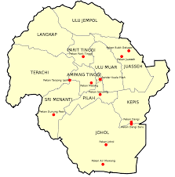

|  |
Kuala Pilah District has 70,331 total residents, according to the 2020 Malaysian census.
This represents a moderate population distribution, with 69 persons per square kilometer.
With 81 percent of the population being Bumiputera, they make up the majority of the district's inhabitants.
Indians are the largest race, followed by Chinese. The percentage of noncitizens in the population is two percent.
There are 105:100 males for every 100 females. 18,715 households are distributed among 24,008 residential places.
Four individuals living in a house was found to be the average household size. Thirteen thousand are young people,
five thousand are elderly, and over forty-eight thousand are of working age.The Kuala Pilah district is home to a
predominantly Muslim population, comprising Malays and a few other ethnic groups. Buddhism is the second most popular
religion, primarily followed by Chinese people. Hinduism, practiced by the bulk of the Indian population, is the third
most popular religion. There are people of other bumiputera races and ethnicities who are not religious, as well as those
who practice Christianity and other religions. |
 |
Townscape of bandar Kuala Pilah, Kuala Pilah is an ancient valley town nestled among vast
rice fields on the eastern slopes of the Titiwangsa Mountains. Many prewar Chinese shophouses still front the
main streets, while traditional Malay kampung houses are built on stilts. There is a sizable Chinese community
there that has been there since the early British era, when they were miners. These days, this community trades
and offers necessities like hair salons, workshops, and kopitiams—traditional coffee shops.Due to the influx of
people returning from Kuala Lumpur, mostly Malays who moved there in search of better opportunities and
"the bright lights," the town is particularly busy on weekends. Most of these people are visiting their parents or
taking care of their family plots. Since most stores close by 7 p.m. every day, the town is fairly deserted at night.
However, early mornings are hectic because people who live nearby and work at government facilities like hospitals,
district offices, and schools.The historic Kuala Pilah Rest House, constructed by the government during the British
occupation, is also located in the town. Businessmen and tourists alike stayed at rest houses in the early days when
they were the only lodging options. Even now, with more options for lodging, it still fulfills this function, if somewhat
less effectively. |